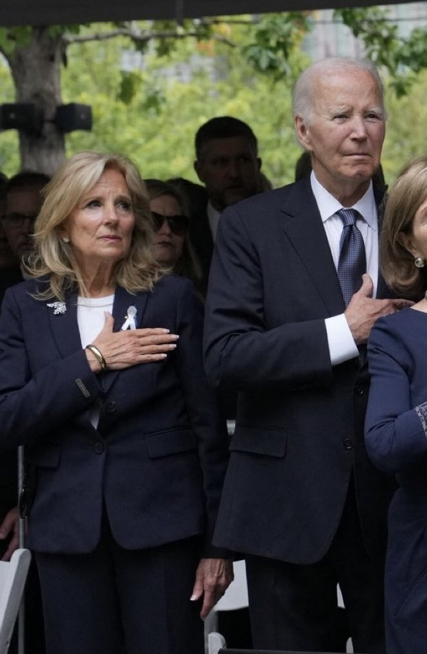

ee
@seeFvn
RT @laozhouhengmei: 拜登，83岁，癌症晚期骨转移，仍与妻子一同站立了数小时，听完9·11事件受害者的名单念诵。
川普却在五角大楼的9·11纪念活动上，坐在沙发上睡着了。
一位忍着剧痛也要对死者保持尊重；另一位脑满肠肥的，对于任何不是以他为中心的活动都不感…

老周横眉
@laozhouhengmei
拜登，83岁，癌症晚期骨转移，仍与妻子一同站立了数小时，听完9·11事件受害者的名单念诵。
川普却在五角大楼的9·11纪念活动上，坐在沙发上睡着了。
一位忍着剧痛也要对死者保持尊重；另一位脑满肠肥的，对于任何不是以他为中心的活动都不感兴趣。
川普是美国以及文明世界最大的耻辱。 https://t.co/v0CFwuM4EU